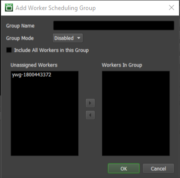

Worker Scheduling¶
Overview¶
You can use the Worker Scheduling feature to configure when Workers applications should be launched and shut down. Worker Scheduling is controlled by the Launcher, so the Launcher must be running on the machines for Worker Scheduling to work.
If a Worker is scheduled to start on a machine, a notification message will pop up for 30 seconds indicating that the Worker is scheduled to start. If someone is still using the machine, they can choose to delay the start of the Worker for a certain amount of time.
Configuration¶
Worker Scheduling can be configured from the Monitor by selecting ‘Tools’ -> ‘Configure Worker Scheduling’. You will need to be in Power User mode for this, if you are not part of a User Group that has access to this feature.

Machine Groups are used by Worker Scheduling to organize Worker machines on the farm, and each group can have different scheduling settings. To add a new Machine Group, simply click the Add button in the Machine Group section.
Worker Scheduling Group Settings:
Group Name: The name with which the Worker Scheduling Group will be identified.
Group Mode: Whether this particular Group is enabled or disabled.
Include All Workers in this Group: If enabled, all Workers will be included in this group.
Unassigned Workers: The Workers that will not be part of this Group.
Workers In Group: Workers that will be part of this Group.
To edit the scheduling settings within a group, simply click on the group in the Machine Groups list.
Worker Scheduling¶
These settings are used to define the schedule for when Workers should start and stop.
Ensure Worker Is Running During Scheduled Hours: If enabled, Workers will be restarted if they are shut down during the scheduled hours.
Day of the Week: Configure which days of the week you want to set a schedule for.
Start Time: The time on the selected day that the Worker application should be launched if it is not already running.
Stop Time: The time on the selected day that the Worker application should be closed if it is running.
Idle Detection¶
These settings are used to launch the Worker if the machine has been idle for a certain amount of time (“idle” means no keyboard, mouse, tablet or spaceball input). There is also additional criteria that can be checked before launching the Worker, including the machine’s current memory and CPU usage, the current logged in user, and the processes currently running on the machine. Finally, this system can stop the Worker automatically when the machine is no longer idle.
Start Worker When Machine Is Idle For ___ Minutes: If enabled, the Worker will be started on the machine if it is idle. A machine is considered idle if there hasn’t been any keyboard or mouse activity for the specified amount of time.
Stop Worker When Machine Is No Longer Idle: If enabled, the Worker will be stopped when the machine is no longer idle. A machine is considered idle if there hasn’t been any keyboard or mouse activity for the specified amount of time.
Only Stop Worker If Started By Idle Detection: If enabled, the Worker will only be stopped when the machine is no longer idle if that Worker was originally started by Idle Detection. If the Worker was originally started manually, it will not be stopped.
There are some limitations with Idle Detection depending on the operating system:
On Windows, Idle Detection will NOT work if the Launcher is running as a service. This is because the service runs in an environment that is separate from the Desktop, and has no knowledge of any mouse or keyboard activity.
On Linux, the Launcher uses X11 to determine if there has been any mouse or keyboard activity. If X11 is not available, Idle Detection will NOT work. One such situation is when the launcher is run as a daemon.
Note that Idle Detection can be overridden in the Local Worker Controls so that users can configure if their local Worker should launch when the machine becomes idle.
Miscellaneous Options¶
These settings are applied to both Worker Scheduling and Idle Detection.
Only Start Worker If CPU Usage Less Than ___%: If enabled, the Worker will only be launched if the machine’s CPU usage is less than the specified value.
Only Start Worker If Free Memory More Than ___ MB: If enabled, the Worker will only be launched if the machine has more free memory than the specified value (in Megabytes).
Only Start Worker If These Processes Are Not Running: If enabled, the Worker will only be launched if the specified processes are not running on the machine.
Only Start If Launcher Is Not Running As These Users: If enabled, the Worker will only be launched if the launcher is not running as one of the specified users.
Allow Workers to Finish Their Current Task When Stopping: If enabled, the Worker application will not be closed until it finishes its current Task.

{kind=link}